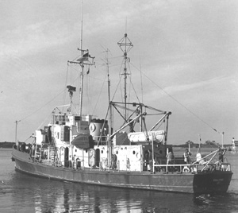

|  copyright - WHOI |
Built: Length: Beam: Draft: Capacity: |
1927, Great Lakes 125’' 23’' 12'3" crew-17, science-9 |
Crawford, a former US Coast Guard cutter, was transferred to WHOI in 1956. The ship underwent considerable renovation at Munro Shipyard in Boston, including an increase in her fuel capacity giving her a range of 30 days and 6,000 miles. She worked in the North and South Atlantic, including the Caribbean Sea amd carried specialized gear for studying hurricanes. The vessel was mainly used for working on hydrographic stations, in long line fishing studies, and in surveying for Texas Towers.
In a novel attempt to increase working space on the vessel, an aircraft
wing was attached to her port side in 1980, though it was later dismantled
and the experiment was never repeated.
Crawford made 175 cruises for WHOI until 1968. In 1970 the vessel
was sold to the University of Puerto Rico.